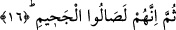
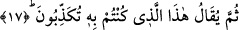

Allah’ı görmekten mahrum olan kimse rahmetin ve kerametin/ikramın büyük bir
kısmından yasaklı demektir. Bu âyet-i kerime, Allah Teâlâ’yı göreceğimize dâir
delillerden birisidir. Allah’a bize sunmuş olduğu bol ihsanı, bağışı, cemâlini müşâhede
ve likasından dolayı hamdederiz.
16. Sonra onlar Cehenneme girerler.
“Sonra onlar” Allah Teâlâ’yı görmekten mahrum olmakla birlikte “muhakkak
Cehenneme girecekler.” Yani onlar Cehennemin içerisine girecekler, arada herhangi bir
engel olmaksızın Cehennemin harâretini doğrudan doğruya hissedeceklerdir.
Âyet-i kerimede yer alan “sümme” rütbe, mertebe itibariyle bir sonralık anlamı ifâde
eder. Çünkü Cehenneme girmek mahrumiyet, değer verilmemek, rahmet ve
kerametten/ikramdan mahrumiyetten daha beterdir. Zira hicab/mahrumiyet -her ne kadar
rûhî azap kabîlinden ise de- cismânî azaptan daha şiddetlidir. Fakat sırf Cehennem
ateşinden kurtuluş azaptan daha hafiftir. Çünkü maddi azabın görülmesiyle kişi aklen
bilineceği üzere iki azabı birden görür.
17. Sonra onlara: «İşte yalanlamış olduğunuz (Cehennem) budur» denilir.
“Sonra onlara” zebânîler tarafından bir azarlama ve vurgulama olsun diye “işte”
dünyada iken “yalanlayıp durduğunuz” azap “budur.” Bu azabı tadın bakalım
“denilecektir.” Dikkat edilirse görülecektir ki âyette zebanilerin ismi geçmemektedir.
Çünkü maksad kâfirlere bu sözü söyleyenin kim olduğu değil, asıl maksad, söylenilecek
olan sözün kendisidir de onun için. Üstelik sözün böyle söylenilmesi bir genelleme de
ifâde eder. Çünkü bu sözü söyleyenin zebanilerden başkası olması ihtimali de vardır.
Bu sözle, ifâdeye korku unsuru daha da yüklenmiş olmaktadır. Âyette azap kelimesine
giden zamirin fiilden önce getirilmesi, ifâdeye herhangi bir hasr vermek için değil, âyet
sonlarındaki ses uyumunu sağlamak içindir. Çünkü azap gören bu kâfirler sâdece azap
görmeyi değil bunun yanında bir çok ahkamı da yalan sayıyorlardı.
[48]. Taberânî, el-Mu’cemü’s-sağîr II, 56.
[49]. İbn Mace, Zühd 29; Ahmed b. Hanbel el-Müsned, II, 297.
[50]. ????